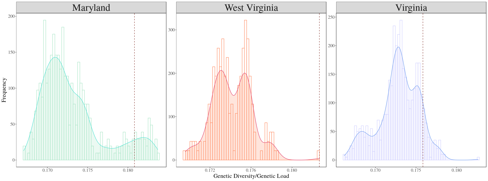

Factors affecting source selection
Even though the optimal source combinations are obtained from the optimize function for each site. Its just a list of recommendations for the restoration practitioners to select from. The final source combination selected depends on the seed availabiity during the year of procurement.
Plotting with base R
# plots
## MD
hist(res_maryland[,1])
res_maryland["XCS_XDS_XPK",1] #0.1738237
abline(v=0.1738237)
## WV
hist(res_westvirginia_4[,1]/res_westvirginia_4[,2])
which.max(res_westvirginia_4[-1,1]/res_westvirginia_4[-1,2]) # the combination chosen for WV
res_westvirginia_4["XCS_XDS_XPK_XSK",1]/res_westvirginia_4["XCS_XDS_XPK_XSK",2]
abline(v=0.1826622, col="red")
## VA
hist(res_virginia_4[-1,1]/res_virginia_4[-1,2])
res_virginia_4["BFA_KOS_XDS_XPK",1]/res_virginia_4["BFA_KOS_XDS_XPK",2] # 0.1758529
abline(v=0.1758529)Plotting with ggplot2
# Plots for APPS ----------------------------------------------------------
require(ggplot2)
# Maryland final
MD_data <- as.data.frame(res_maryland[,1]/res_maryland[,2])
colnames(MD_data)[1] <- "GD_GL"
MD_data$Sources <- rownames(MD_data)
rownames(MD_data) <- NULL
MD_data <- MD_data[-1,]
MD_plot <- ggplot(MD_data, aes(x=GD_GL)) +
geom_histogram(aes(y=..density..),color="#9FE2BF",fill="white", position="dodge", bins=60)+
geom_density(alpha=.2, fill="#9FE2BF", color="#DFFF00") +
geom_vline(aes(xintercept=res_maryland["XCS_XDS_XPK",1]/res_maryland["XCS_XDS_XPK",2]),
linetype="dashed", color="#7B241C")+
theme(legend.position="top")
plot1 <- MD_plot + scale_color_brewer(palette="Dark2") +
theme_minimal()+theme_classic()+theme(legend.position="top") +
ylab("Frequency") + xlab("Genetic Diversity/Genetic Load") +
theme_bw(base_size = 11, base_family = "Times") +
theme(axis.text=element_text(size=14),
axis.title=element_text(size=18),
panel.background = element_blank(),
legend.background = element_blank(),
panel.grid = element_blank(),
plot.background = element_blank(),
legend.text=element_text(size=rel(.8)),
strip.text = element_text(size=30),
legend.position = "none")
# West Virginia
WV_data <- as.data.frame(res_westvirginia_4[,1]/res_westvirginia_4[,2])
colnames(WV_data)[1] <- "GD_GL"
WV_data$Sources <- rownames(WV_data)
rownames(WV_data) <- NULL
WV_data <- WV_data[-1,]
WV_plot <- ggplot(WV_data, aes(x=GD_GL)) +
geom_histogram(aes(y=..density..),color="#FF7F50",fill="white", position="dodge", bins=60)+
geom_density(alpha=.2, fill="#FF7F50", color="#FFBF00") +
geom_vline(aes(xintercept=res_westvirginia_4["XCS_XDS_XPK_XSK",1]/res_westvirginia_4["XCS_XDS_XPK_XSK",2]),
linetype="dashed", color="#7B241C")+
theme(legend.position="top")
plot2 <- WV_plot + scale_color_brewer(palette="Dark2") +
theme_minimal()+theme_classic()+theme(legend.position="top") +
ylab("Frequency") + xlab("Genetic Diversity/Genetic Load") +
theme_bw(base_size = 11, base_family = "Times") +
theme(axis.text=element_text(size=14),
axis.title=element_text(size=18),
panel.background = element_blank(),
legend.background = element_blank(),
panel.grid = element_blank(),
plot.background = element_blank(),
legend.text=element_text(size=rel(.8)),
strip.text = element_text(size=30),
legend.position = "none")
# Virginia
VA_data <- as.data.frame(res_virginia_4[,1]/res_virginia_4[,2])
colnames(VA_data)[1] <- "GD_GL"
VA_data$Sources <- rownames(VA_data)
rownames(VA_data) <- NULL
VA_data <- VA_data[-1,]
VA_plot <- ggplot(VA_data, aes(x=GD_GL)) +
geom_histogram(aes(y=..density..),color="#CCCCFF",fill="white", position="dodge", bins=60)+
geom_density(alpha=.2, fill="#CCCCFF", color="#6495ED") +
geom_vline(aes(xintercept=res_virginia_4["BFA_KOS_XDS_XPK",1]/res_virginia_4["BFA_KOS_XDS_XPK",2]),
linetype="dashed", color="#7B241C")+
theme(legend.position="top")
plot3 <- VA_plot + scale_color_brewer(palette="Dark2") +
theme_minimal()+theme_classic()+theme(legend.position="top") +
ylab("Frequency") + xlab("Genetic Diversity/Genetic Load") +
theme_bw(base_size = 11, base_family = "Times") +
theme(axis.text=element_text(size=14),
axis.title=element_text(size=18),
panel.background = element_blank(),
legend.background = element_blank(),
panel.grid = element_blank(),
plot.background = element_blank(),
legend.text=element_text(size=rel(.8)),
strip.text = element_text(size=30),
legend.position = "none")
# convert to long data
MD_data2 <- MD_data
MD_data2$Plot <- "Maryland"
WV_data2 <- WV_data
WV_data2$Plot <- "West Virginia"
VA_data2 <- VA_data
VA_data2$Plot <- "Virginia"
GDGL_long_dat <- rbind(MD_data2,WV_data2,VA_data2)
GDGL_long_dat$Plot <- factor(GDGL_long_dat$Plot,levels=c("Maryland","West Virginia","Virginia"))GD/GL plot across sites
#
# figure dim: png(2000h,769w), pdf(7h,18w)
GDGL_plot <- ggplot(GDGL_long_dat, aes(x=GD_GL,color=Plot,fill=Plot)) + facet_wrap(~Plot, scales="free") +
# add histogram
geom_histogram(data=filter(GDGL_long_dat, Plot=="Maryland"), aes(y=..density..),color="#9FE2BF",fill="white", position="dodge", bins=60)+
geom_histogram(data=filter(GDGL_long_dat, Plot=="West Virginia"), aes(y=..density..),color="#FF7F50",fill="white", position="dodge", bins=60)+
geom_histogram(data=filter(GDGL_long_dat, Plot=="Virginia"), aes(y=..density..),color="#CCCCFF",fill="white", position="dodge", bins=60)+
# add geom_density
geom_density(data=filter(GDGL_long_dat, Plot=="Maryland"), alpha=.2, fill="#9FE2BF", color="#40E0D0") +
geom_density(data=filter(GDGL_long_dat, Plot=="West Virginia"), alpha=.2, fill="#FF7F50", color="#DE3163") +
geom_density(data=filter(GDGL_long_dat, Plot=="Virginia"), alpha=.2, fill="#CCCCFF", color="#6495ED") +
# add vline
geom_vline(data=filter(GDGL_long_dat, Plot=="Maryland"),
aes(xintercept=res_maryland["XCS_XDS_XPK",1]/res_maryland["XCS_XDS_XPK",2]),
linetype="dashed", color="#7B241C") +
geom_vline(data=filter(GDGL_long_dat, Plot=="West Virginia"),
aes(xintercept=res_westvirginia_4["XCS_XDS_XPK_XSK",1]/res_westvirginia_4["XCS_XDS_XPK_XSK",2]),
linetype="dashed", color="#7B241C") +
geom_vline(data=filter(GDGL_long_dat, Plot=="Virginia"),
aes(xintercept=res_virginia_4["BFA_KOS_XDS_XPK",1]/res_virginia_4["BFA_KOS_XDS_XPK",2]),
linetype="dashed", color="#7B241C") +
# theme
theme_minimal()+theme_classic()+theme(legend.position="top") +
ylab("Frequency") + xlab("Genetic Diversity/Genetic Load") +
theme_bw(base_size = 11, base_family = "Times") +
theme(axis.text=element_text(size=14),
axis.title=element_text(size=18),
panel.background = element_blank(),
legend.background = element_blank(),
panel.grid = element_blank(),
plot.background = element_blank(),
legend.text=element_text(size=rel(.8)),
strip.text = element_text(size=30),
legend.position = "none")
GDGL_plot